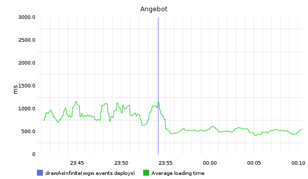
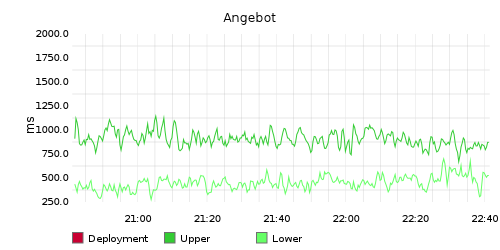
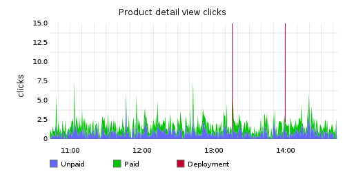
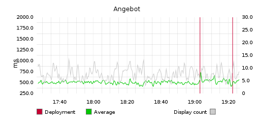

Monitoring web applications
Find out what is happening with web application before everyone else
Luka Mužinić
@lmuzinic
@trikoder
@netakademija
Background
0020342: Portal speed optimization
"I don't want to optimize anything that I don't have control of"
Servis za monitoring
StatsD + Carbon + Graphite + Whisper
StatsD
network daemon
UDP > TCP
aggregates and forwards
port 8125
Carbon
backend storage application
port 2003
CLI process
accepts formatted data and stores them on disk
<key> <numeric value> <timestamp>
Whisper
fixed sized database
RRD
storage numeric, time series data
Graphite
real time graphing system
frontend for previous two components
Send everything to StatsD
* almost
StatsD key concepts
buckets - namespaced place to store information
values - any value as long as it is (int)
flush - StatsD aggregates, remember?
StatsD metrics: Overview 1/4
counters - inc/dec value inside flush interval
timers - collects, aggregates and calculates before flush
gauges - simple number store
StatsD metrics: Counters 2/4
can be incremented or decremented multiple times before it gets flushed to Carbon
StatsD metrics: Timers 3/4
collection of metrics
upper, lower, count, sum, mean
450, 120, 553, 994, 334, 844, 675, 496
upper=994, lower=120, count=8, sum=4466, mean=558.25
StatsD metrics: Gauge 4/4
holds a value that will be flushed to Carbon
450, 120, 553, 994, 334, 844, 675, 496
496
Storage Schemas
[stats]
pattern = ^wgw\.ctl_homepage\..*
retentions = 10:2160,60:10080,600:262974freq:history, 10 seconds for last 6 hours, 1 minute for last week, 10 minutes for last 5 years
Let's visualize
up to now, all was about storing data... time to change!

How to send data
from application
easy use https://github.com/godmodelabs/php-statsd-client
and wrap it
Rendering time
abstract class Monitor extends Client implements SplObserver
{
protected $pathComponents = array();
public function __construct()
{
parent::__construct(fw3k2_config::get('STATSD_HOST'), fw3k2_config::get('STATSD_PORT'));
$this->addToPath(fw3k2_config::get('FW3K2_APP_ID'));
if (fw3k2_config::get('FW3K2_APP_MODE') == FW3K2_APP_MODE_DEVELOPMENT) {
$this->addToPath('testing');
}
}
abstract public function update(SplSubject $subject);
...
class RenderingTimeMonitor extends Monitor
{
public function update(SplSubject $subject)
{
if (in_array($subject->name, $this->allowedNames)) {
$this->addToPath('render_time');
$this->addToPath($subject->name);
$this->timingPath();
}
}
}
class WgwFrontController implements SplSubject
{
private $observers = array();
// controller to use
$str_controller = !is_null($obj_request->ctl) ? $obj_request->ctl : APP_DEFAULT_CTL;
$this->name = $str_controller;
public function attach(SplObserver $observer)
{
$id = spl_object_hash($observer);
$this->observers[$id] = $observer;
}
public function detach(SplObserver $observer)
{
$id = spl_object_hash($observer);
unset($this->observers[$id]);
}
public function notify()
{
foreach ($this->observers as $observer) {
$observer->update($this);
}
}
}
$frontController = new WgwFrontController();
$frontController->attach(new RenderingTimeMonitor());
$frontController->attach(new TroubleshootingMonitor());
$frontController->attach(new ApiMonitor());
$frontController->run();
$frontController->notify();Result
app sends rendering time of each monitored controller

Business logic
class RegisterDisplayMonitor extends Monitor
{
public function update(SplSubject $subject)
{
$this->addToPath('clicks');
$this->addToPath($subject->getDisplayedItem());
$this->incrementPath();
}
}
class product_display_counter implements SplSubject
{
private $displayedItem = array();
public function register_display_for_company()
{
$this->setDisplayedItem('product_detailview', 'paid');
...
$this->setDisplayedItem('product_detailview', 'unpaid');
}
protected function setDisplayedItem($item, $clickType)
{
$this->displayedItem = array($item, $clickType);
}
public function getDisplayedItem()
{
return $this->displayedItem;
}
}
$obj_counter = new product_display_counter();
$obj_counter->attach(new RegisterDisplayMonitor());
...
$obj_counter->notify();Result
app sends increment when each click is triggered +
we can check if we broke important business logic

Events
update.sh
#!/bin/bash
read -p "Checkout tag: " CHECKOUT_TAG
git fetch && git checkout $CHECKOUT_TAG
...
echo "Notify Graphite..."
echo "wgw.events.deploys 1 `date +%s`" | nc -w1 37.139.20.120 2003
and then use
alias(drawAsInfinite(wgw.events.deploys), "Deployment")
Result
to get horizontal lines that mark when you did the deploy

D&D
demo & discussion